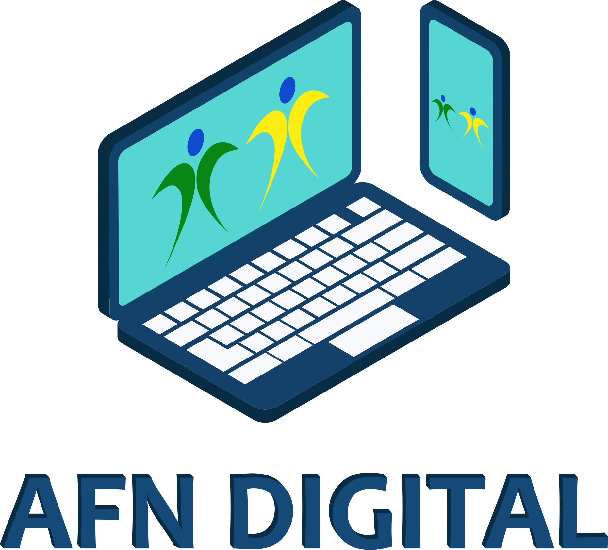
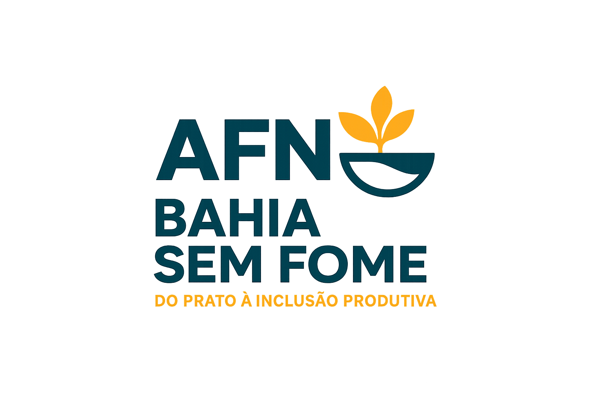

AFN – Bahia Sem Fome: Do Prato à Inclusão Produtiva
Identificação da Proponente
Nome: Associação Futuro da Nação
CNPJ: 32.930.262/0001-41
Data de Criação: 03/12/2018
Endereço: Rua Villa Lobos, nº1 – 1º andar, Jardim Santo Inácio, Salvador, BA
Telefone: (71) 3213-0599
E-mail: associacaofuturodanac20@gmail.com
Representante Legal: Ana Lúcia Melo de Souza
RG: 04.047.682-02 SSPBA
CPF: 770.603.775-49
CNPJ: 32.930.262/0001-41
Data de Criação: 03/12/2018
Endereço: Rua Villa Lobos, nº1 – 1º andar, Jardim Santo Inácio, Salvador, BA
Telefone: (71) 3213-0599
E-mail: associacaofuturodanac20@gmail.com
Representante Legal: Ana Lúcia Melo de Souza
RG: 04.047.682-02 SSPBA
CPF: 770.603.775-49
Apresentação da OSC – Histórico e Objetivos
A Associação Futuro da Nação atua há mais de sete anos na promoção de inclusão social, redução de vulnerabilidades e formação profissional de jovens e mulheres em Salvador e região metropolitana, especialmente nos bairros Jardim Santo Inácio e Calabetão. Desenvolve projetos de cidadania, cultura e capacitação, conectados com os Objetivos de Desenvolvimento Sustentável (ODS).
Objetivos institucionais:
Reduzir a fome, o desemprego e a violência por meio da atuação social integrada.
Promover assistência social e alimentar, formando jovens e adultos.
Incentivar práticas sustentáveis, educação e inclusão produtiva.
Objetivos institucionais:
Reduzir a fome, o desemprego e a violência por meio da atuação social integrada.
Promover assistência social e alimentar, formando jovens e adultos.
Incentivar práticas sustentáveis, educação e inclusão produtiva.
Diagnóstico Social
Jardim Santo Inácio e Calabetão apresentam índices elevados de desemprego, insegurança alimentar grave e violência urbana. A população jovem e feminina é a mais atingida, vivendo o cotidiano da fome, da ausência do trabalho formal e das oportunidades. Nesses territórios, garantir comida é promover dignidade e combater os fatores que mantêm o ciclo da pobreza e exclusão social.
Objeto da Parceria
Gestão de cozinhas comunitárias em bairros vulneráveis de Salvador, oferecendo alimentação regular e gratuita aliada a mini cursos de qualificação e oficinas de cidadania, dentro das diretrizes do Bahia Sem Fome e Programa Comida no Prato.
Objetivo da Parceria
Reduzir os índices de insegurança alimentar, desemprego e violência juvenil nos bairros Jardim Santo Inácio e Calabetão, promovendo:
Alimentação saudável a 800 famílias/ano (3.200 pessoas).
Capacitação social-profissional para 80% dos beneficiários.
Engajamento de jovens e mulheres, elevando suas chances de inserção produtiva e cidadania.
Alimentação saudável a 800 famílias/ano (3.200 pessoas).
Capacitação social-profissional para 80% dos beneficiários.
Engajamento de jovens e mulheres, elevando suas chances de inserção produtiva e cidadania.
Descrição das Ações e Metas
Oferecer 72.000 refeições em 12 meses (mínimo 200/dia, 3x/semana por ponto).
Capacitar 80% dos atendidos em mini cursos de culinária, tecnologia, cidadania, design digital.
Efetivar parcerias com CRAS, CREAS e CadÚnico para busca ativa e acompanhamento.
Aplicar 55% dos recursos na compra de alimentos da agricultura familiar.
Promover 10 oficinas mensais de capacitação em trabalho decente, empreendedorismo e direitos humanos.
Garantir 100% da equipe técnica formada e treinada antes do início das operações.
Realizar reuniões e relatórios mensais com fotos, dados e escuta dos participantes.
Capacitar 80% dos atendidos em mini cursos de culinária, tecnologia, cidadania, design digital.
Efetivar parcerias com CRAS, CREAS e CadÚnico para busca ativa e acompanhamento.
Aplicar 55% dos recursos na compra de alimentos da agricultura familiar.
Promover 10 oficinas mensais de capacitação em trabalho decente, empreendedorismo e direitos humanos.
Garantir 100% da equipe técnica formada e treinada antes do início das operações.
Realizar reuniões e relatórios mensais com fotos, dados e escuta dos participantes.
Indicadores e Resultados Esperados
Famílias atendidas: 800
Pessoas beneficiadas: 3.200
Refeições distribuídas: 72.000
Beneficiários capacitados (mini cursos): 80%
Jovens e mulheres participantes: 70%
Recursos aplicados em alimentos: 55%
Equipe capacitada: 100%
Redução da insegurança alimentar: 15%
Aumento da empregabilidade: 12%
Relatórios/boletins divulgados: 10
Presença em reuniões de avaliação: 90%
Pessoas beneficiadas: 3.200
Refeições distribuídas: 72.000
Beneficiários capacitados (mini cursos): 80%
Jovens e mulheres participantes: 70%
Recursos aplicados em alimentos: 55%
Equipe capacitada: 100%
Redução da insegurança alimentar: 15%
Aumento da empregabilidade: 12%
Relatórios/boletins divulgados: 10
Presença em reuniões de avaliação: 90%
Metodologia
O projeto adota planejamento participativo, integração das ações alimentares e pedagógicas, parcerias com entidades sociais locais e sistema de monitoramento regular dos resultados. Cada beneficiário é acompanhado por equipe técnica e social, estimulando a participação em todas etapas e garantindo a proximidade dos resultados esperados.
Justificativa e Embasamento Técnico
A fome, a violência e o desemprego só serão superados se forem enfrentados juntos: servir refeições é apenas o começo. O impacto social será multiplicado ao integrar capacitação profissional, oficinas e orientação cidadã, criando oportunidades reais de inclusão produtiva para jovens e mulheres, favorecendo o empreendedorismo e rompendo o ciclo da exclusão.
Capacidade Técnica e Sustentabilidade
A AFN possui quadro técnico formado e qualificado, experiência comprovada em projetos de inclusão social e alimentar, rede local de parceiros, estrutura física adequada e domínio das metodologias de busca ativa, alimentação saudável e capacitação social-profissional.